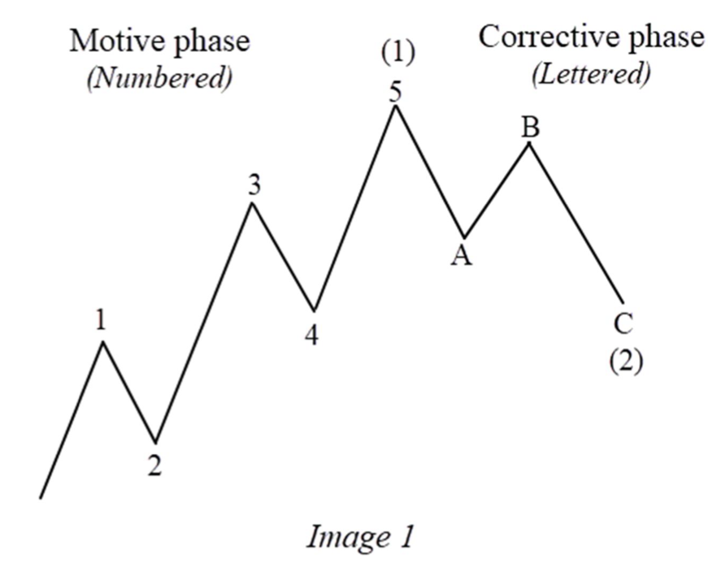

CHAPTER I · PDF tr. 9–12
ELLIOTT WAVE AT FIRST GLANCE
Tổng quan Elliott Wave
Đọc trang 9–12 trong PDF, theo các mục dưới đây, rồi làm 6 câu hỏi của riêng chương này. Nội dung dưới đây là tóm lược đọc hiểu, không thay thế toàn chương gốc.
Elliott Wave at First Glance
Bắt đầu bằng cách nhìn toàn chu kỳ. Hình 1 dùng số cho pha motive và chữ cho pha corrective; chưa cần phân loại các biến thể sẽ học ở hai chương tiếp theo.

Motive Phase & Corrective Phase
Motive đi cùng hướng xu hướng lớn và được minh họa bằng 1–2–3–4–5. Corrective là pha điều chỉnh, minh họa bằng A–B–C. Hướng của một chân riêng lẻ không đồng nghĩa hướng của cả chu kỳ.
Patterns on a Larger Scale
Các hình 2–3 trình bày cấu trúc nhỏ ghép vào cấu trúc lớn. Khi đọc, theo một bộ nhãn ở một cấp trước, rồi mới nhìn các sóng con.
Trắc nghiệm chương I
Chỉ hỏi nội dung thuộc trang 9–12. Chọn một đáp án mỗi câu rồi chấm; câu chưa trả lời tính là chưa đúng. Lời giải có trang kiểm tra lại.
Chưa chấm.
Lựa chọn được lưu riêng cho khóa theo chương trên trình duyệt này.
Điểm là kết quả đọc hiểu tài liệu, không phải chứng nhận đếm sóng hay hiệu quả giao dịch.